1과목: 전자공학
1. 다음 회로의 명칭으로 옳은 것은? (단, R = R'이고 다이오드는 이상적이라고 가정한다.)
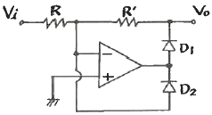
2. 다음 회로에서 스위치 S를 10초 동안 on하고 40초 동안 off한 동작을 지속적으로 반복하면 저항 R의 양단에 발생하는 전압파형의 duty cycle은 얼마인가?
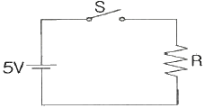
3. 정논리에서 그림과 같은 게이트는? (단, A와 B는 입력, C는 출력이다.)
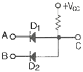
4. 어떤 증폭기에서 입력전압이 5mV이고 출력전압이 2V 일 경우 이 증폭기의 전압 증폭도를 dB로 환산하면 약 몇 dB 인가?
5. 다음 중 발진회로를 이용하지 않는 것은?
6. 다음 이상 발진기의 발진주파수는 약 몇 kHz 인가? (단, R = 4kΩ, C = 0.01μF)
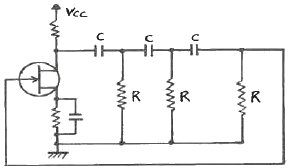
7. 진폭변조방식과 위상변조방식을 결합한 변조방식은?
8. 전원회로에서 전원전압을 일정하게 유지하기 위하여 사용되는 다이오드는?
9. 다음 회로의 명칭으로 옳은 것은?
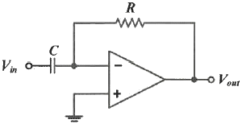
10. 연산증폭기의 내부 구성회로 중 Push-Pull 전력 증폭회로에서 크로스오버 일그러짐을 방지하기 위해 사용되는 소자로 가장 적절한 것은?
11. 다음 중 보수를 이용한 감산회로에 대한 설명으로 옳은 것은?
12. 다음 중 슈미트 트리거(Schmitt trigger)회로의 응용이 아닌 것은?
13. 다음 중 사인파의 파형률은?
14. FM변조방식에서 주파수의 높은 대역을 강조하여 S/N비가 저하되는 것을 방지하기 위한 회로는?
15. NPN 트랜지스터가 증폭기로 동작하기 위한 베이스-이미터 접합부(JBE) 및 베이스-컬렉터 접합부(JBC)의 바이어스 전압 방향으로 옳은 것은?
16. 다음 중 교류 전력제어에 사용되는 3단자 반도체 소자는?
17. VC = 30ㆍcos(ωCt) 반송파를 VS = 20ㆍcos(pt)의 신호파로 진폭 변조했을 때 변조도는 약 몇 % 인가?
18. 트랜지스터의 증폭기 종류 중 입력과 출력의 위상은 역상이 나며, 전압이득이 큰 증폭회로 방식은?
19. 다음 중 발진기를 증폭기와 비교하였을 때 가장 큰 차이점은?
20. A, B, C 양의 논리입력에서 A＜B 이고, B＞C일 경우에만 출력 Y가 “1”이 되는 논리식은?
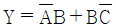
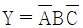
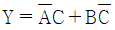
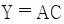
2과목: 회로이론 및 제어공학
21. 회로에서
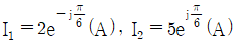
, I3= 5.0(A), Z3 = 1.0Ω 일 때 부하(Z1, Z2, Z3) 전체에 대한 복소 전력은 약 몇 VA 인가?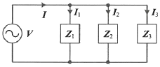
22. RL 직렬회로에서 시정수가 0.03s, 저항이 14.7Ω일 때 이 회로의 인덕턴스(mH)는?
23. 그림과 같은 T형 4단자 회로의 임피던스 파라미터 Z22는?
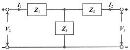
24. 그림 (a)의 Y결선 회로를 그림 (b)의 △결선회로로 등가 변환했을 때 Rab, Rbc, Rca는 각각 몇 Ω 인가? (단, Ra = 2Ω, Rb = 3Ω, Rc = 4Ω)
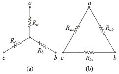
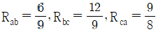
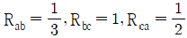
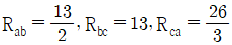
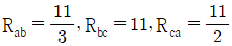
25. 상의 순서가 a-b-c인 불평형 3상 교류회로에서 각 상의 전류가 Ia = 7.28∠15.95°(A), Ib = 12.81∠-128.66°(A), Ic = 7.21∠123.69°(A) 일 때 역상분 전류는 약 몇 A 인가?
26. 회로에서 6Ω에 호르는 전류(A)는?
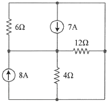
27.
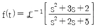
는?28. 그림과 같은 부하에 선간전압이 Vab = 100∠30°(V)인 평형 3상 전압을 가했을 때 선전류 Ia(A)는?
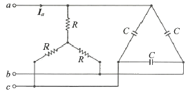
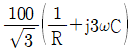
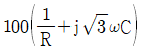
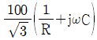
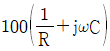
29. 분포정수로 표현된 선로의 단위 길이당 저항이 0.5Ω/km, 인덕턴스가 1μH/km, 커패시스턴스가 6μF/km일 때 일그러짐이 없는 조건(무왜형 조건)을 만족하기 위한 단위 길이당 컨덕턴스(℧/m)는?
30. 다음과 같은 비정현파 교류 전압 v(t)와 전류 i(t)에 의한 평균전력은 약 몇 W 인가?
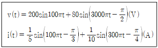
31. 그림의 신호흐름도를 미분방정식으로 표현한 것으로 옳은 것은? (단, 모든 초기 값은 0이다.)
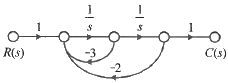
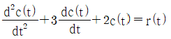
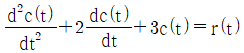
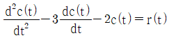
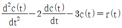
32. 전달함수가
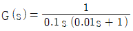
과 같은 제어시스템에서 ω = 0.1 rad/s 일 때의 이득(dB)과 위상각(°)은 약 얼마인가?33.
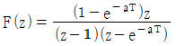
의 역 z 변환은?34. 다음의 개루프 전달함수에 대한 근궤적이 실수축에서 이탈하게 되는 분리점은 약 얼마인가?
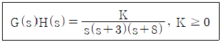
35. 제어시스템의 특성방정식이 s4+s3-3s2-s+2=0 와 같을 때, 이 특성방정식에서 s 평면의 오른쪽에 위치하는 근은 몇 개인가?
36. 다음 블록선도의 전달함수
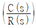
는?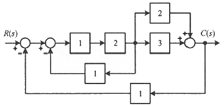
37. 제어시스템의 전달함수가
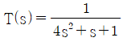
과 같이 표현될 때 이 시스템의 고유주파수(ωn(rad/s))와 감쇠율(ζ)은?38. 다음의 상태방정식으로 표현되는 시스템의 상태천이행렬은?
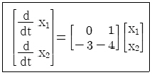
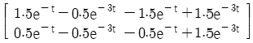
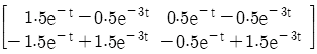
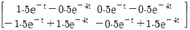
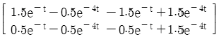
39. 기본 제어요소인 비례요소의 전달함수는? (단, K는 상수이다.)
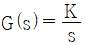
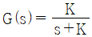
40. 다음의 논리식과 등가인 것은?
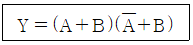
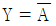
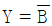
3과목: 신호기기
41. 장대형 전동 차단기의 기동전류(A)는 얼마 이하가 되도록 하여야 하는가?
42. 전동 차단기의 동작 전원이 정전되었을 때에는 차단기가 열린 위치에서 중력에 의해 약 몇 초 이내에 수평 위치까지 닫혀야 되는가?
43. 철도신호제어회로 중 시소 계전기가 사용되는 회로는?
44. 직류기에서 전기자 반작용을 방지하는 방법이 아닌 것은?
45. 60Hz, 슬립 3%, 회전수 1164rpm인 유도 전동기의 극수는?
46. 직류 분권전동기를 무부하로 운전하고 있을 때, 계자회로에 단선이 생긴 경우 발생하는 현상으로 옳은 것은?
47. 자극수 4, 슬롯 수 40, 슬롯 내부 코일변수 4인 단중 중권 직류기의 정류자 편수는?
48. 3상유도 전동기의 특성 중 비례추이를 할 수 없는 것은?
49. 변압기의 부하가 증가할 때의 현상으로 틀린 것은?
50. ATS 지상자 제어계전기의 접점저항은 몇 mΩ 이하이어야 하는가?
51. 건널목 고장감시장치에서 검지할 수 없는 것은?
52. 3상 유도 전동기에서 2차 측 저항을 2배로 하면 최대 토크는 어떻게 변하는가?
53. 다음 중 쌍방향성 3단자 사이리스터는?
54. 건널목 경보기에서 경보종의 타종수는 기당 매분 몇 회인가?
55. 전부하에서 동손이 80W, 철손이 40W인 변압기가 있다. 부하의 약 몇 % 일 때 최대 효율이 되는가?
56. 4극, 60Hz, 22KW인 3상 유도전동기가 있다. 전부하 슬립 4%로 운전할 때 토크(kg·m)는 약 얼마인가?
57. 전력용 반도체 소자 중 사이리스터에 속하지 않는 것은?
58. 단상 변압기의 1차 전압이 2200V, 1차 무부하 전류는 0.088A, 무부하 철손이 110W 라고 하면, 자화전류(A)는 약 얼마인가?
59. 60Hz의 변압기에 50Hz의 동일 전압을 가했을 때의 자속밀도는 60Hz일 때보다 어떻게 되는가?
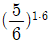
로 된다.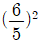
로 된다.60. 120V, 전기자 전류 100A, 전기자 저항 0.2Ω인 분권전동기의 발생 동력(kW)은?
4과목: 신호공학
61. 신호의 현시방법으로 3위식 3현시에 속하지 않는 것은?
62. 다음 중 고속철도 전용선에 사용되는 선로전환기의 종류는?
63. 열차자동정지장치(ATS)의 지상자 설치에 관한 설명으로 옳은 것은?
64. 진로쇄정과 비교하여 진로구분쇄정의 이점으로 옳은 것은?
65. 3현시 구간에서 폐색구간의 거리가 1200m, 열차의 길이가 100m, 신호 현시에 필요한 최소거리가 200m, 신호기가 주의신호에서 진행신호를 현시할 때까지의 시간이 1초라면 최소운전시격은 몇 초인가? (단, 열차의 속도는 90km/h 이다.)
66. 다음 중 신호기의 정위현시가 다른 것은?
67. 다음 빈칸에 들어갈 알맞은 내용은?
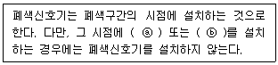
68. 전기연동장치의 전철제어회로에 관한 설명 중 틀린 것은?
69. 점제어식 열차자동정지장치(ATS)의 지상자에서 비상정지위치까지의 거리 계산식으로 옳은 것은? (단, 열차종별은 전동차이며 여유거리를 고려하지 않은 경우이다.)
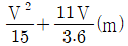
70. 열차자동방호장치(ATP)에서 선로변제어유니트와 발리스간 케이블 연결에 대한 설명으로 틀린 것은?
71. 열차집중제어장치의 주요기능으로 거리가 먼 것은?
72. 다음 중 궤도회로의 불평형률은? (UB : 불평형률(%), I1, I2 : 각 레일의 전류)
73. NS형 전기선로전환기의 제어 계전기에 사용되는 계전기는?
74. 단선구간에서 사용하는 대용폐색방식으로 복선구간의 통신식에 대한 수속을 하고 신중을 기하기 위하여 지도표를 발행하여 운행 열차의 기관사에게 휴대하도록 하는 방식은?
75. 열차집중제어장치(CTC)의 운전모드에 관한 설명으로 틀린 것은?
76. 선로전환기의 정·반위 결정법 중 옳은 것은?
77. 임펄스 및 AF 궤도회로(무절연 AF궤도회로 제외)의 경우 궤도단락감도는 그 궤도회로를 통과하는 열차에 대하여 맑은 날 몇 Ω 이상이어야 하는가?
78. 전기연동장치에서 전기적 쇄정의 목적이 아닌 계전기는?
79. 여자한 궤도 계전기가 230mV에서 낙하하였다. 궤도 계전기의 저항(Ω)은 약 얼마인가?(단, 여자 전류는 38mA, 낙하전압은 여자전압의 68% 이다.)
80. 신호설비에 안정된 전원을 공급하기 위한 신호용 배전반에 관한 설명으로 틀린 것은?